Help_synchro_us.htm
Update 03 October 2006
USPC 3100 26 pin HE10 connector, K4 |
|
|
START OUT |
17 |
|
START IN |
22 |
|
PRF OUT |
21 |
|
PRF IN |
5 |
|
PRF LINK |
20 |
|
GROUND |
13, 14 |
MUX 3108 10
pin HE10 connector,
|
|
|
START IN |
5 |
|
PRF IN |
7 |
|
GROUND |
1, 2, 3,
9, 10 |
RCPP 3101 10
pin HE10 connector,
|
|
|
PRF IN |
7 |
|
GROUND |
1, 2, 10 |
Next
connection must always been made up:
|
USPC 3100 MB |
MUX 3108 |
|
START OUT
K4, way 17 |
START IN |
|
PRF OUT
K4, way 21 |
PRF IN
|
|
RX IN J2 |
OUT
JS1 |
·
In low resolution : Max. range + delay + gates end + 20 µs
·
In high resolution : 2*( Max. range + delay + gates end) + 20 µs
be lower
or equal to the smallest time, defined by sum of Max. range + delay + gates
end, of all tests on master MASTER_LINK or MASTER board.
Remarks:
1. No START trigger connected between USPC cards:
· Independent number of tests per MUX when several USPC/MUX are connected
2.
With START trigger connected
between USPC cards:
·
Same number of test per MUX.
Possibility to use 2 MUX with MUX 1 and MUX
3.
There is a jitter of +/- 20nsec.
between PRF IN and PRF OUT of USPC
cards.
ENABLE
INTERCONNEXION (see
sketches attached)
|
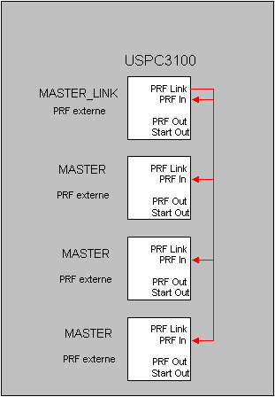 |
Sketch 1
Multiple single channel
boards PRF is controlled by the PRF
Link signal from MASTER_LINK board |
|
(Synchro_multiple_boards_picture1.gif) |
|
|
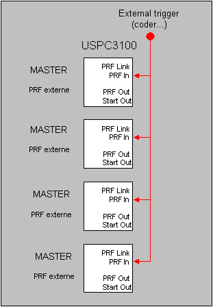 |
Sketch 2
Multiple single channel
boards PRF is controlled by an external
signal |
|
(Synchro_multiple_boards_picture2.gif) |
|
|
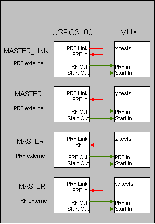 |
Sketch 3
Multiple PCMUX boards with
different number of tests PRF is controlled by the PRF
Link signal from MASTER_LINK board |
|
(Synchro_multiple_boards_picture3.gif) |
|
|
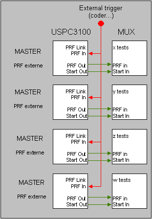 |
Sketch 4
Multiple PCMUX boards with different
number of tests PRF is controlled by an
external signal |
|
(Synchro_multiple_boards_picture4.gif) |
|
|
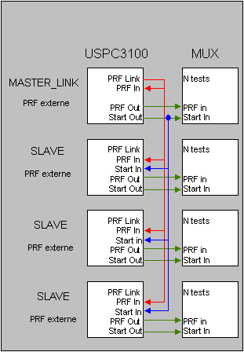 |
Sketch 5
Multiple PCMUX boards with
the same number of tests PRF is controlled by the
PRF Link signal from MASTER_LINK board |
|
(Synchro_multiple_boards_picture5.gif) |
|
|
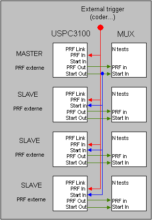 |
Sketch 6
Multiple PCMUX boards with the
same number of tests PRF is controlled by an
external signal |
|
(Synchro_multiple_boards_picture6.gif) |
|
|
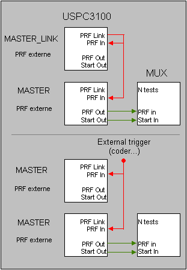 |
Sketch 7
Combination of one single
board and one PCMUX board PRF is controlled by the
PRF Link signal from single MASTER_LINK board PRF is controlled by an
external signal |
|
(Synchro_multiple_boards_picture7.gif) |
|
|
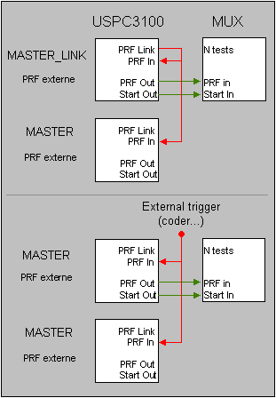 |
Sketch 8
Combination of one single
board and one PCMUX board PRF is controlled by the
PRF Link signal from PCMUX MASTER_LINK board PRF is controlled by an
external signal |
|
(Synchro_multiple_boards_picture8.gif) |
|
|
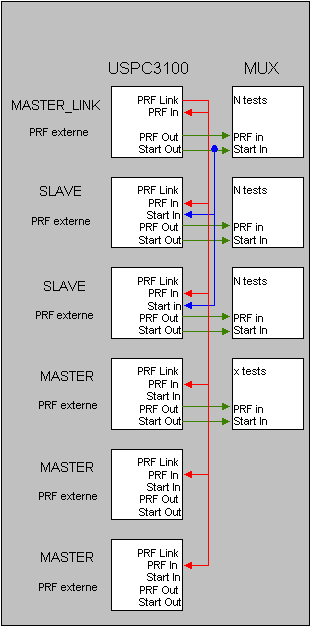 |
Sketch 9
Combination of several
single boards and PCMUX boards PRF is controlled by the
PRF link signal |
|
(Synchro_multiple_boards_picture9.gif) |
|
|
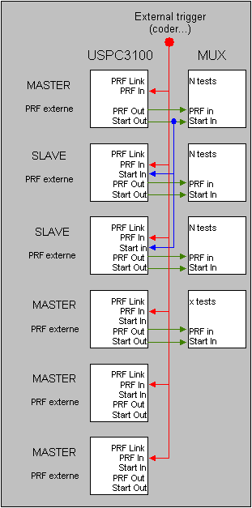 |
Sketch 10
Combination of several
single boards and MUX boards PRF is controlled by an
external signal |
|
(Synchro_multiple_boards_picture10.gif) |
|
|
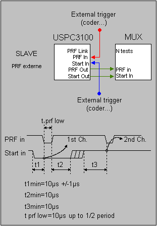 |
Sketch 11
PCMUX board fully drove by
externals signals PRF is controlled by an
external signal. Cycle is controlled by an
external signal (Start In) |
|
(Synchro_multiple_boards_picture11.gif) |
|
[Summary]